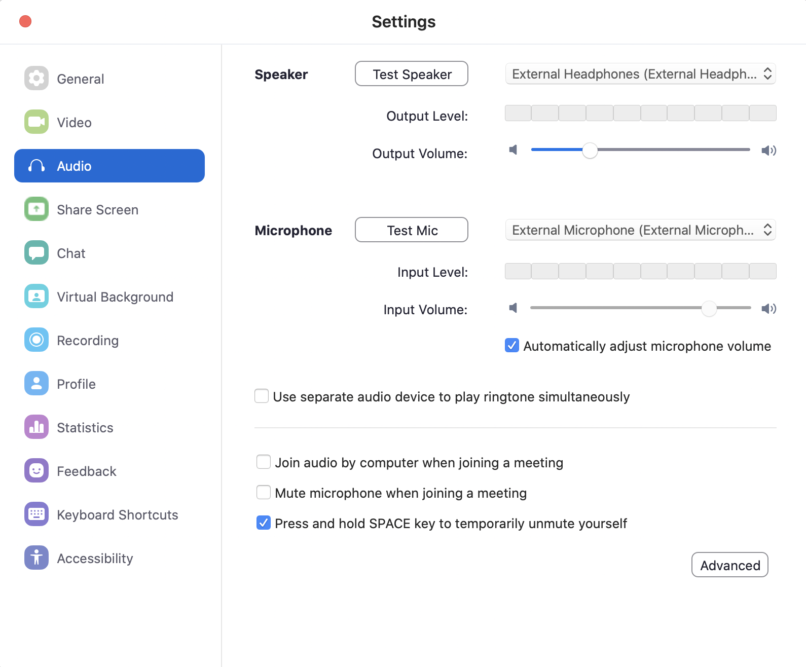
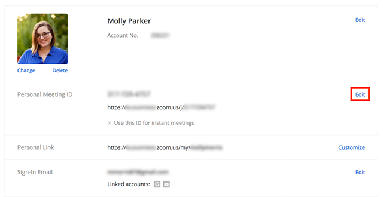
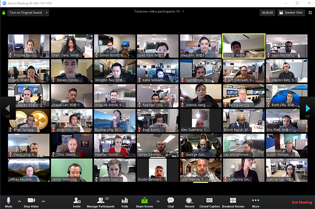
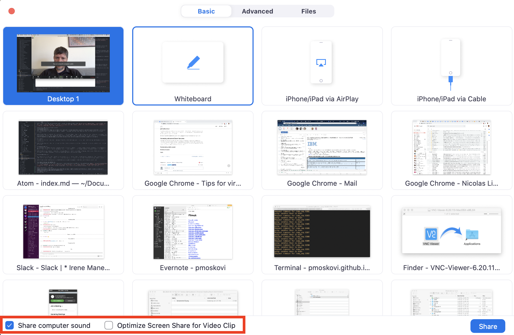
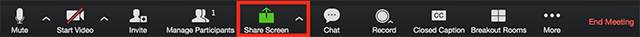
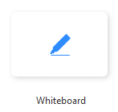
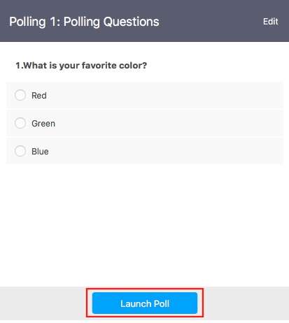

With COVID-19 upon us, bringing school closures and shelter in place orders, we all need to change gear and adjust to call of the times. Here I collected some of the best practices I learned first hand from running and participating in online sessions throughout the years.
Since many of my friends decided to give Zoom a try, when it comes to screenshots and tool examples, that’s what I’ll use. Wherever I can, I try my best to call out other tools as well.
While I provide basic introductory information on installation and setup, my assumption is that you had a chance to start playing around with Zoom, and have some first-hand experience with it. The more you use it the more comfortable you will be with it. If you get a chance try to test your ideas by recruiting buddies for your test runs; your peers, students, family and friends.
Class preparation
Given that you have no direct physical contact with your students, it’s important to communicate with them in a clear and concise manner. Assuming that they know when their class is (recurring calendar invites may help here), you should try your best to provide a solid, permanent location for your class communication. It can be a web page, a google doc, a wiki page - anything really, as long as it meets two important requirements. It is:
- URL addressable: that is accessible from a web browser, such as Chrome, or Safari; and the URL doesn't change.
- Editable: you can make changes to it on-the-fly without too much effort.
Here are the items I found useful for the class communication document:
- Name and description of the class
- Name and contact information (e.g.: email) of the teacher
- Schedule of the class
- Link to the online event (e.g.: Zoom URL)
- Description and content of previous classes
- Class expectations, advise, tips
- Video conferencing tips and tricks for students
Download, install, setup
Chances are you won’t be able to physically look over the shoulders of your students, you should make sure everybody succeeded downloading, installing, and setting up their web conferencing environment. If this first step fails, the rest of this tutorial is of no use, your students are disconnected. Be sure to use alternative communication channels (email, phone, text) to confirm your students are ready to go.
The download and installation steps for Zoom will differ, depending on the type of device you are using.
- Desktop
- Android
After installation, on desktop computers, you can go ahead and test your audio and video settings through Zoom Preferences > Video and Zoom Preferences > Audio.
Pro Tip: You can have friends or study-groups work together on the setup and request them to ensure that everybody on the team is ready to roll.

Allowing Zoom to access your computer's audio devices
Right after installation, the first time you run Zoom (and most other video conferencing software), it will request you to grant access to your peripheries, such as your microphone, your built-in camera. Be sure you grant Zoom access to these, otherwise your video will not show, your sound will not be transmitted.
Audio, video, screen sharing doesn't work
Many first-time Zoom users on the Mac face the problem of audio, video, screen sharing not working. This all can be fixed by simply setting up the permissions for Zoom on your Mac. (While this step may feel cumbersome, this is needed to protect you; that no program can listen to you through your microphone or watch you through your webcam - without your explicit permission.)
Running Zoom the very first time
Creating an easy to recognize personal meeting ID
For every meeting Zoom generates a unique ID, a long, 10-digit number. It’s not meant to be remembered. Also, just by looking at the number, you cannot tell whose meeting ID it is. To address this, Zoom allows you to create a personal meeting ID. This can include your name, tha name of your school or class, something that’s easy to read, write, and remember. This is much friendlier than a long numerical ID. Example: zoom.us/my/MrMoskovits. This will also allow students to recognize, tell apart (and even remember) the zoom IDs of their teachers. You can set up your personal meeting ID on the Zoom web portal by editing your profile.

Encourage use of video
Meeting over an online conference is by far not the same as meeting in person. You should always encourage your students to turn on their video, while attending class. Some of us prefer making it a rule of the class: in this class we turn on our video. Having said that, there can be special circumstances, when students feel uncomfortable turning on their video (e.g.: they’re sick and are in bed); be sure to handle such situations with empathy.
Pro Tip: You, as the host have certain level of control over remote attendee’s video. You can turn it off remotely (e.g.: if they by accident took their phone to a location they didn’t mean to). You can also suggest your remote attendees to turn on their video, but Zoom requires their agreement, ultimately it will be their choice whether it’s on or off.
Important video conferencing features
Mute/unmute users
One of the most disturbing mishap that can happen on any video call if somebody leaves their microphone on and talk to people around them or pick up the phone. As a best practice, you should encourage your students to always mute themselves, unless they speak. Also, as a host, you can also mute your attendees.
Pro Tip: Play the round-robin hello game with your first time users. Name a student, ask them to unmute themselves, and say hello to everybody. Then, they get to pick the next student, and mute themselves. The new student unmutes themselves, says hi, names the next one, and so on… This gives everybody a chance to experiment with mute and unmute. It also gives you peace of mind that your students will know how to speak up if they need to.
Chat
A parallel channel to audio and video is chat, provided by every video conferencing tool. This allows users to type a message that everybody (or a specific user) can see.
Pro Tip: Have your students post a message to the chat, so that everybody can see it. Then, challenge them to send you a private message, that only you can see.
Renaming users
On mobile phones and tablets, Zoom uses the name of the mobile devices, e.g.: iPhone. This is not a problem as long as the student’s video is turned out. When the student’s video is off (because they turned it off, or to save bandwidth), this will become a problem, as it becomes hard to identify students.
Pro Tip: Ask your students to change their screen name. They can easily do so by starting the Zoom app (before joining). If they are on a call, they can change it by clicking Participants, then selecting their name from the list, and select Rename.
Join before host
Zoom allows you to let your students join the call before you do. This is a feature I highly recommend to enable, giving your students an opportunity to chit-chat before you join. Also, if you’re a minute or two late, they know that they’re at the right place; it may even encourage them to join early.
Pro Tip: Join before host is a functionality you can control by logging in to the Zoom website (zoom.us > Sign In), and
Gallery view
Be sure you check out the Gallery view in Zoom, bringing all (very many) attendees together in a single view. This gives you a “classroom feel”, by seeing everybody on the call.

Spotlight video
When attendees have their micropohe one, Zoom brings the person to the forefront, who spoke most recently. The Spotlight video feature allows the host to specify who should be shown to all attendees big, as the speaker.
Pro Tip: In general, it’s good practice to have all the microphones on mute - which is something becomes second nature to most attendees, and is something the host can control as well, by muting people.
Accessing advanced Zoom features
Zoom, like many other online tools offer a free version. It always makes sense to give the tool a spin before buying. However, if you want to be productive, it is highly recommended to get a paid license of Zoom; it will eliminate most of the limitations that you’ll feel constrained by when using the free version. Two of the most important features that you get with the paid license: live interactive polls and no time limits on the sessions.
Playing video (with sound)
Sharing video as part of your class brings a nice change for your class; I highly encourage you to give it a try. However, you have to be sure you’re sharing the sound of the video with your students as well by checking the Share Computer Sound option. If you’re sharing a full-screen video, you should also check the Optimize Screen Share for Video Clip checkbox.
Pro Tip: If you have an iOS device (iPhone, iPad), you can share their screen as well either via cable or wirelessly via AirPlay.

Breakout rooms
If used well, breakout rooms is an incredibly powerful capability. It has the power of bringing true interactivity and collaboration to your class. In my experience, breakout rooms with 3-4 students work really well. They’re small enough that everybody can have their voice heard, and they’re large enough that students don’t feel lonely. It’s also important how much time you give your students. In my experience 5 minute is the minimum meaningful time, and 12-15 mint is the longest I’d use. You can have Zoom assign students to the breakout rooms, or can
Pro Tip: You can visit your students in the breakout rooms - in fact I’d recommend you doing so. It brings back some of the warmth of somebody is knocking on the door feeling.
Whiteboard
The whiteboard feature will allow you to share a whiteboard that you and other participants (if allowed) can annotate on. To enable whiteboard, select Share Screen from the meeting toolbar.

Then select Whiteboard.

You can use the annotation tool and the page controls to manage the whiteboard.
Pro Tip: You need paid Zoom license to use the Whiteboard.
Polls
Polling is one of my favorite features - it engages audiences like nothing else. It takes a few steps to enable and use polling - it’s summed up very well in the Zoom documentation.
Pro Tip: You need paid Zoom license to use the Whiteboard. If you don’t have polling available to you, you can use third party tools (in combination with screen sharing). My favorite polling app is sli.do.
